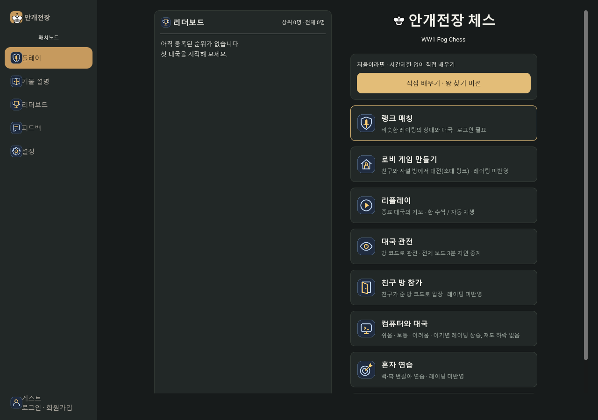
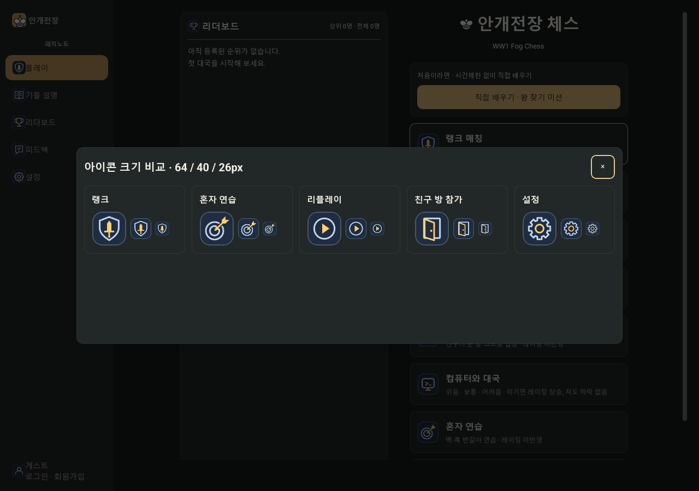

FOGCHESS · ICONS v2
더 분명한 형태,
테마에 맞는 골드와 블루.
녹색을 푸른 계열로 바꾸고 골드 포인트와 밝기 차이를 키웠습니다. 밝은 모드에서는 연한 바탕에 짙은 블루·앰버 선을 사용합니다. 게임에서 테마를 바꾸면 기존 메뉴와 열린 팝업의 아이콘도 즉시 바뀝니다.
요청한 다섯 아이콘
위는 변경 전후 64px 비교, 아래는 실제 메뉴 40px와 사이드바 26px 크기입니다.
랭크 매칭
이전
수정
방패 안에 날·가드·손잡이가 구분되는 검
혼자 연습
중앙에 꽂힌 화살촉과 뒤쪽 깃
리플레이
이전
수정
원과 재생 삼각형만 남긴 형태
친구 방 참가
이전
수정
화살표 없이 문틀과 열린 문짝
설정
중앙이 일치하는 8방향 대칭 톱니
공통 아이콘 17종
랭크 매칭
로비 만들기
리플레이
대국 관전
친구 방 참가
혼자 연습
설정
기물 설명
순위·레이팅
피드백
계정
보통
어려움
확인
닫기
17종 × 두 테마 = SVG 34개. 원본과 light/ 폴더, manifest.json, 사용 안내가 ZIP에 포함되어 있습니다. 규격·파일 목록
실제 게임 적용 화면

Godot에서 확인한 작은 아이콘

테마 전환·동적 팝업·아이콘 로딩·메뉴 및 레이팅 팝업 검사 190개 통과. 웹 빌드와 실제 모바일 기기는 이번 검증에 포함하지 않았습니다.
검증 결과 · 변경 내역